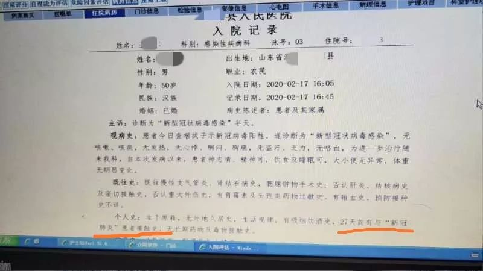
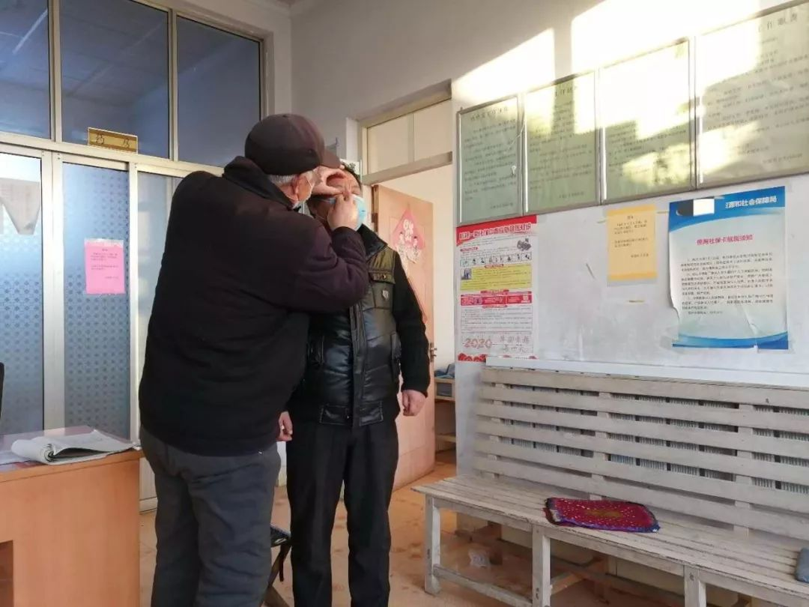
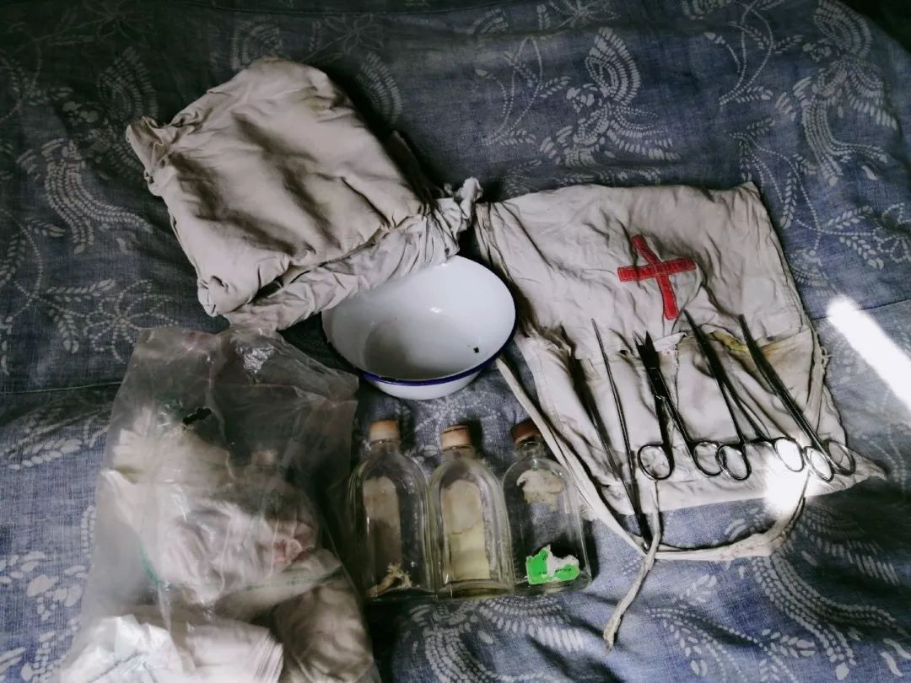
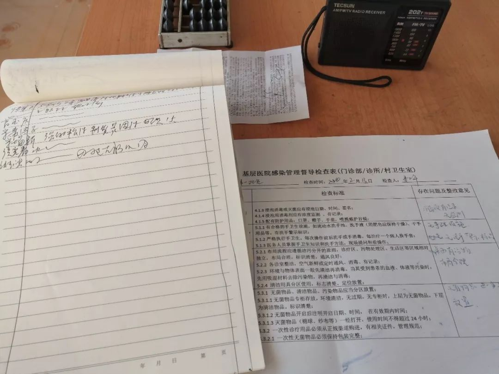

回家过年，我遇到了“封村”
原文链接 备份链接 *************▲************* 1月27日，旅客在关闭的青岛汽车总站外徘徊。 （新华社记者 李紫恒/图） 全文共*1705*字，阅读大约需要*4*分钟。 我们村“封”在村里的年轻人每天猫在家 …

作者：张霞
来源：*商业人物*（ID：*biz-leaders）*
壹
2月17日下午，也就是昨天，我所在的村庄爆发了自疫情以来最大的一次恐慌。
恐慌的迹象由村头的小卖部显现。傍晚六点钟左右，我陪妈妈购买面粉时，小卖部的主人告诉我们，没有50斤的大袋面粉了。“不知是咋地了，刚才好几个人推着小推车，四五袋的买。”她嘀咕道。
疑惑在晚上8点20左右得到了解答，我的亲友群以及同学开始流传：我们县出现第一例新冠肺炎确诊者了！一张显示是由县人民医院流传来出的照片，和一段其所在村庄已经彻底“封村“的视频被四处转发。图片显示，这一患者16:05分入院，40分钟后被确诊，27天前（1月21日）曾与新冠肺炎患者有过接触。

昨天晚上8：20左右，我县出现新冠肺炎确诊病例的消息，开始在亲友间和微信群流传
这一传说中的确诊者所在的村庄，和我们村相距不过十几公里。年前村民间的互相往来肯定是有的。而微信群中，他的接触树状图也显示，27天内他曾去过县城，和村内的村民多次接触，并在大年初二前，去过外村走动。
虽然是隔着网络，也已经感受到恐惧来袭了。群里，不少人忆起，自己曾去过他所出没过的县城超市。甚至有人开始忧心起县医院的医疗水平，评估其到底能容纳多少病人。
我会过日子的妈妈，更是提前担心起一旦整个县城被封，蔬菜、肉类和粮食会不会涨价。不顾天黑，妈妈又跑了一趟小卖部，买来了一箱牛奶和几斤鸡蛋。
而我们村一对在元宵节过后，由河南婆家返回的母子，也成为迁怒对象。
“都怨外来的。要不是外来的，我们村得多好，多平安？”妈妈向我转述，小卖部里抢购的人，正在抱怨。外地才会有病毒，是他们固有的认知。
贰
在村医宋恒让的记忆里，上一次，整个村庄都对外来者如此恐慌，是在非典时期了。
宋恒让今年73岁，是村里目前年纪最大的村医，直到13年前才退休，有40年的行医史。

疫情期间，已退休的宋恒让在卫生室辅助儿子检测村民健康状况
据他回忆，当时，我所在的村庄也是异常紧张的。当时，曾有谣传在村里蔓延，“那个病，只要得上基本就没法治了”。每天早晚宋恒让和村领导都背着喷雾器，在村的各个角落里喷射消毒液。消毒水是镇政府提供的，需定期检查。
村里有三个村民是由北京返回的，都被迅速的隔离了起来。宋恒让一天需要为他们量三次体温，然后统计上报。即便如此，这三个村民也是整个村庄战战兢兢的所在。宋恒让玩笑说，“当时就连他们的家所在胡同，很多人也都绕着走”。其中有一个隔离者，耐受不住了，一度向他抱怨，“这是把我当什么了？老鼠吗？”
但据他多年的观察，严重的流行性疾病对村庄造成的损害并不大。从医之后，他印象最深的一个流行病防治任务，是给村民接种天花疫苗。
公开资料记载，新中国成立初期，天花仍旧是我国死亡率最高的急性传染病之一。1952年，卫生部发出种痘指示，预定当年种痘二亿六千万人。1966年，世界卫生组织提出各国加强合作，提高疫苗接种密度，根除全球天花流行的倡议。
宋恒让是1967年接受了县医院的统一培训后，开始行医的。在乡村任务性的推行天花接种，或许跟世卫组织的这个倡议有关。
在他的记忆里，当时要求，不论大人小孩， 但凡没有接种史的，都要接种。所幸的是，我们村并没有天花的历史，感染水痘的居多。村里便有几个五六十岁的人，因为小时候抓挠水痘留下了疤痕，被称为“王大麻子”“刘大麻子”。
另外一个曾夺取了无数婴儿性命的疾病“七日风”，大约也是在1967年左右被消灭。这得益于当时对乡村接生员的统一培训。我今年82岁的奶奶，是当时村里推荐上去的，和宋恒让一起在县医院受训过“同学”。

奶奶作为接生员时的行医工具
根据宋恒让和奶奶讲述，“七天风”应该就是破伤风，指小孩出生后，出现抽搐、哭喊不停、发烧等症状，一般七天内便死了。主要原因应该是，乡村产婆大都没有专业的医学知识，剪脐带的剪刀是家用剪刀，用白酒擦拭一下，也就算是消毒了。容易感染和受风。成为村里的接生员后，镇卫生所定期提供给奶奶纱布、绷带、医用酒精、消毒水等物，产钳、镊子、剪刀也是医院配备，由此开始，“七天风”这种疾病在村庄里消失了。
叁
天花和破伤风之外，被当作任务消除的还有血吸虫病和麻风病。
史料里能够查询到的，《国务院关于消灭血吸虫病的指示》文件是在1957年发出，那时宋恒让才十岁。他有印象的是1970年左右，他负责采集过村民的血样，每晚拿着一些玻璃片，挨家挨户去给睡着的小孩和大人在耳垂上扎上那么一针，再将血样标注好名字，交给乡卫生所的人化验。
麻风病所要引起的恐惧则要大的多。许是会造成皮肤异样和肢端残疾的缘故，患者在村里很受避讳。我们村有三个病例， 据宋恒让和村里的老人讲，其中一个因为病症特别严重，一直被隔离在山顶的小屋，直到去世也没有成婚。村里为他盖了石头屋，打了水井，定期有人负责送上粮食，不允许他下山取水。 “大麻风”来了，甚至是大人对小孩的恐吓之语，对这种疾病的误解可见一斑。
宋恒让的儿子宋连宁是村里的第二代村医，19岁跟着父亲行医。按他的描述，对乡民危害最大的其实是卫生健康习惯。比如疖子、虱病、疥疮、湿疹、荨麻疹等。他1997年跟父亲行医的时候，这些因不太注意更换被褥或者洗澡，而患上的皮肤类疾病，还时常发生。
据他讲述，虱子和跳蚤曾在村里横行。蛔虫病很长一段时间，也困扰乡村的孩子，这也大多也跟喜欢挖泥巴、挖沙子，却没有洗手的卫生习惯有关。再则就是腮腺炎，农村叫做“痄腮”，往往班里一个孩子得了，很快就病倒一半，还有“红眼病”，也就是沙眼。
村里出过的最严重的一种病，其实是“出血热”。这主要跟村里野鼠和家鼠横行有关。我所在的村庄很长一段时间是和猫头鹰、老鼠、黄鼠狼、蝙蝠等各种动物共存的，村里不少泥肧房。摊煎饼或者放柴火的柴房里遇见老鼠并不罕见。肉菜或者粮食被老鼠咬过，时有发生，人吃下后容易感染出血热。
我们村患者这种疾病的不下十个。镇中学里，也有爆出过这种疾病。
肆
至于对目前的新冠肺炎的防控，作为村医，宋恒让和宋连宁所感受的到是：村民先是有些意识松懈，而后又太过恐慌。

疫情期间，基层医院防控极严，村卫生所需每天记录消毒情况
许是非典期间，整个县内都没有确诊患者缘故，新冠肺炎疫情刚刚蔓延之际，村民大多是不够警惕。“这种病，怎么会传到我们这里？”是他们惯说的话语。
他们认为，这种由大城市蔓延的疾病如果能够到了乡村，那恐怕就是无所幸免了。有几分自己是战场最后方的侥幸。
在宋恒让父子那里，这种放松有另一重解读——乡村里挨过的病痛和死亡实在太多了。
意外随时发生，我们村曾有人爬在核桃树上打核桃，不下心摔了下来，后脑勺正好磕在石头上，不到半小时也就过世了；因为常年种植果树，一年要打十来遍农药，最近几年患肺癌的颇多，有一些去医院化疗了，有的也就静待着死亡了，还有人为了不给家里造成负担喝农药自杀了；有患了乳腺癌的妇女，因耽误了治疗，在家生吃蟾蜍和壁虎。
县城对他们就是一个很大的世界了，更遥不可及的世界里的疫情，发生在自己头上的机率，或许并不比从核桃树上摔下更高。
但因为信息闭塞而蔓延的恐慌，也会爆发力十足。对村里那对河南返回的母子的态度，便是一个例证。从元宵节她们返村过后，整个村庄的神经似乎有些紧绷起来。村里的猪肉和面粉也被抢购了不少，因为谣传就要彻底“封村”了。
昨天晚上的面粉抢购事件，也是一个例子——今天一早，最终村里又传来消息，一切只是一个乌龙。据说是误诊，那人只是确诊患者的接触者，县医院太紧张了，市里检测后不是。
警报一解除，到了上午村民又开始上山干活了。除了疫情，他们还担心五月份的樱桃。
不过在地里，村民也都戴上了口罩——同样是因为消息闭塞所带来的恐惧，按他们零零散散、以讹传讹的信息判断：这病只要得了，县里是治不了的。
（应受访者要求文中人名为化名）
*文中图片为作者拍摄

推荐阅读


严正声明：“商业人物”所有原创文章，转载均须获授权。一切形式非法转载，包括但不限于盗转、未获“商业人物”授权通过第三方转载行为，均属侵权行为，“商业人物”将公布“黑名单”并追究法律责任。“商业人物”只愿与尊重知识产权的机构合作。
投稿、约访、合作，联系邮箱：bizleaders@qq.com
添加微信biz-leader，获转载授权或邀您加入商友群
1.长按右侧二维码即可关注***。*
2.期待您置顶与星标。欢迎分享与评论，欢迎通过留言或私信方式给我们提供选题线索。
3.点击“阅读原文”，看商业人物官网，获取更多精彩内容。**

原文链接 备份链接 *************▲************* 1月27日，旅客在关闭的青岛汽车总站外徘徊。 （新华社记者 李紫恒/图） 全文共*1705*字，阅读大约需要*4*分钟。 我们村“封”在村里的年轻人每天猫在家 …
原文链接 备份链接 2020年1月14日，腊月二十，在纳家营做田野调查的我，收到儿时玩伴的微信消息，他问我春节回不回家，如果回去的话，就告诉他一下，他也从广州赶回去，这样一来，假期里就会有人做伴，不会那么无聊。于是我们就约好这个假期都要回 …
原文链接 备份链接 2020年1月13日，疫情还远在长江边的武汉，身在北京的我简单地收拾了两件衣服，坐上开往河北省邯郸市的高铁，我的寒假田野调查就正式开始了。出发之前我向导师熊春文老师表达了自己想要去“曲周田野点”与村里的乡亲们过春节，并 …
原文链接 备份链接 *************▲*************玉龙雪山脚下的玉湖村。 （受访者供图/图） 全文共*4244*字，阅读大约需要10分钟。 在求助信里，我写了四样求支援的物品，是因为我只知道这四样。而实际情况 …
原文链接 备份链接 《战疫口述记》，是燃财经在新型冠状病毒肺炎期间推出的特别栏目，记录疫情亲历者的观察和感受。本文为第2期，第1期请见《我在武汉战肺炎》。 作者 | 闫丽娇 唐亚华 孟亚娜 金玙璠 黎明 孔明明 苏琦 编辑 | 周昶帆 春 …